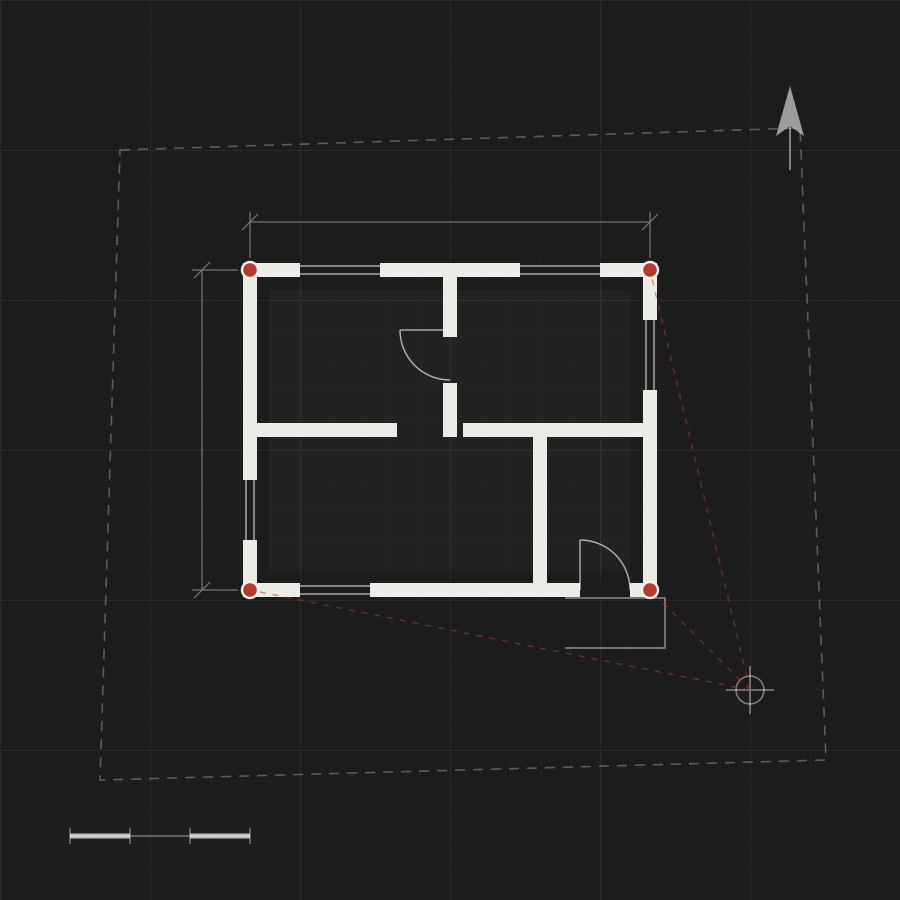

Акт осмотра объекта
Сомневаетесь, считается ли ваша постройка объектом капитального строительства? Осмотрим объект и оформим акт осмотра.

Что входит в услугу
Что такое акт осмотра объекта
Не каждая постройка — недвижимость. По Гражданскому кодексу (ст. 130) недвижимым имуществом считаются объекты, прочно связанные с землёй, перемещение которых без несоразмерного ущерба их назначению невозможно. Временные постройки, киоски и навесы, согласно Градостроительному кодексу (п. 10 ст. 1), объектами капитального строительства не являются.
Чтобы выяснить, есть ли у конкретного строения признаки объекта капитального строительства, кадастровый инженер осматривает его и оформляет акт осмотра.
Если строение окажется капитальным, следующий шаг — технический план для постановки на кадастровый учёт. Работаем в Самаре, Самарской области и Республике Башкортостан.
Как проходит работа
Вопросы по услуге
Похожие услуги
Готовы обсудить акт осмотра объекта?
Оставьте заявку — оценим объём работ и назовём точный срок бесплатно.